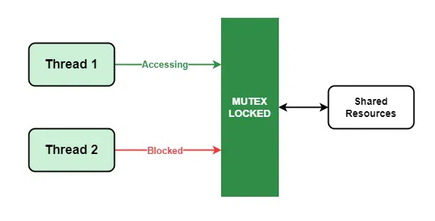

RISC-V Linux 嵌入式编程技术 · 第六章
本章实验 · 三线程协同
说明
讲义 6.1 已说明：采样、控风扇和 MQTT 可以放在一条线程里按顺序做完；mosquitto_loop_forever 等待返回之后，才轮到采样和风扇判定。本章用三条线程让三件事按各自周期进行。采集线程写 last_temp，控制线程读同一个 last_temp，实验用 USE_LOCK 对照无锁交错与加锁后读到完整写入。本实验交付两份工程，顺序固定：先看清「丢更新」与 ThreadSanitizer 报告，再在荔枝派 4A 上跑产品骨架并完成无锁→加锁对照。race-demo 与 TSan、tri-thread 三线协同均已在板上实机验收。
chapters/ch06/code/race-demo/— 强制竞态小程序；配合gcc -fsanitize=thread（ThreadSanitizer，简称 TSan）指出谁在抢同一变量（主机或板端均可）chapters/ch06/code/tri-thread/— 板上产品骨架：采集线程写温度、控制线程按阈值开/关风扇、通信线程跑 MQTT

前置：已读讲义 6.1–6.3；第五章控灯与 Broker 通路可用；温控相关接线可用。板端可原生
make；主机交叉用 make CROSS_COMPILE=riscv64-ruyisdk-linux-gnu-。TSan 用板端或主机本机 gcc -fsanitize=thread（交叉工具链通常不开 TSan）。
race-demo 故意无锁，用来制造竞态；不要把无锁写法抄进 tri-thread 的产品路径。板上验收以加锁版本（
USE_LOCK 1）为准。
步骤
A. race-demo + TSan（先做，固定顺序）
目的：用一个「很多线程同时给同一计数器加一」的小程序，亲眼看到最终计数偏小（丢更新），再用 TSan 指出具体是哪两行源码在抢。主机或荔枝派 4A 板端均可；下面实机摘录来自板端。
-
无锁跑一遍，记录最终计数（应明显小于「线程数 × 每线程循环次数」的期望值）：
$ cd chapters/ch06/code/race-demo $ make $ ./race-demo expect=400000 got=215946 RACE(lost updates)
-
主机上固定必做：跑带 TSan 的版本之前，先执行：
$ sudo sysctl vm.mmap_rnd_bits=28把内核的用户态地址空间随机化位数调到 ThreadSanitizer 当前工具链能稳定配合的范围。板端若已能直接跑 TSan，可跳过本步。 -
打开 TSan 再跑，保存完整报告：
$ make tsan $ ./race-demo WARNING: ThreadSanitizer: data race Read of size 8 ... by thread T2: #0 bump_racy .../main.c:24 Previous write of size 8 ... by thread T1: #0 bump_racy .../main.c:26 SUMMARY: ThreadSanitizer: data race .../main.c:24 in bump_racy
在报告里标出它指出的两处源码访问行（上例为bump_racy的读与写），对照源码确认。
本段成功判据：有「计数偏小」的记录；有完整 TSan 报告；能指出抢变量的两行。
B. 板上：tri-thread（无锁必现 → 加锁修好 → 干净停）
-
配置与补全三线程
打开chapters/ch06/code/tri-thread/。Broker 用环境变量BROKER_HOST（先在主机hostname -I）；可选MQTT_CLIENT_ID。补全三条线程的循环职责与on_message里的 TODO（例如status上行）：- 采集线程：周期读温度，写入共享状态；
- 控制线程：读共享温度，按阈值开/关风扇；
- 通信线程：跑 MQTT 循环（下行命令 / 上行状态，主题
course/thermo/cmd/course/thermo/status）。
-
先不加锁（脚手架默认
USE_LOCK 0）
编译运行约 10–20 秒。采集线程写共享温度时故意拆成两步（先temp_a，再temp_b），中间留空窗；控制线程若读到两值不一致，会打印：[RACE] inconsistent snapshot temp_a=275 temp_b=270
验收证据：几秒内应反复出现[RACE]；退出时race_hits远大于 0。把含[RACE]的日志片段贴进报告即可（不必再猜「温度跳变」这类偶发现象）。 -
改为
USE_LOCK 1
成对写入落在同一把锁里，空窗消失。重新编译部署，跑同样时长：不应再出现[RACE]；退出时race_hits=0。风扇仍按阈值动作。 -
编译并部署
路径 A — 板端原生：$ cd chapters/ch06/code/tri-thread $ make clean && make $ BROKER_HOST=<主机局域网IP> ./tri-thread
路径 B — 主机交叉后 scp：$ make clean && make CROSS_COMPILE=riscv64-ruyisdk-linux-gnu- $ file tri-thread # 应为 RISC-V ELF $ scp tri-thread user@board-ip:~/ $ ssh user@board-ip 'BROKER_HOST=<主机局域网IP> ./tri-thread'
-
功能验证
风扇按阈值动作（超温开 / 降温关）；主机向course/thermo/cmd发下行（如set high 30），板端日志出现[MQTT] cmd payload=...。实机摘录（USE_LOCK=1）：[INFO] USE_LOCK=1 SIMULATE_SENSOR=1 [INFO] Ctrl+C for clean stop [SENSE] temp=25.5 [MQTT] broker 192.168.x.x:1883 USE_LOCK=1 [MQTT] subscribed course/thermo/cmd [SENSE] temp=28.5 [INFO] fan ON [MQTT] cmd payload=set high 30 [INFO] fan OFF [INFO] race_hits=0 (USE_LOCK=1；期望 0→很多，1→0) [INFO] exited cleanly
USE_LOCK 0时同段日志会夹杂多行[RACE]，退出race_hits远大于 0。 -
干净停
在板端按 Ctrl+C：风扇关断，然后进程退出。实机末尾：[INFO] fan OFF [INFO] exited cleanly
验收
| 项 | 通过条件 | □ |
|---|---|---|
| 三线同时跑 | 采集、控制、通信日志/行为均可观察 | |
| 风扇阈值 | 超温开 / 降温关 | |
| MQTT 通信线 | 下行或上行至少一项可演示（与第五章主题约定一致） | |
| 无锁错乱 | USE_LOCK 0 下日志出现 [RACE]，且 race_hits>0 | |
| 加锁正确 | USE_LOCK 1 后无 [RACE]，race_hits=0；风扇阈值正常 | |
| sysctl + TSan | 主机若需则已执行 sudo sysctl vm.mmap_rnd_bits=28；race-demo 的 TSan 报告已保存，能指出抢变量的两行 | |
| 干净停 | Ctrl+C 后风扇关，进程退出 |
完成标志：上表全部勾选。本骨架供综合项目复用：滞回继续跑，Agent 经 MQTT 指挥。